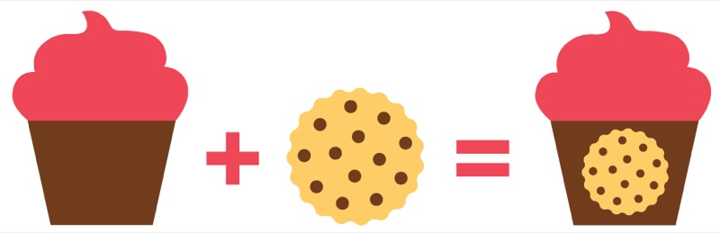

About
How many times have you walked into a bakery and been torn between trying the freshly-baked cookie and the decadent cupcake?
When I, an actress with a passion for baking, was in my mid-20s, an acquaintance hired me to make cupcakes for her wedding.
I wanted to do something extra special. I wondered — what would happen if I inserted cookie dough INTO cupcake batter and baked it? Would the dough become a cookie inside of the cake!? Would it remain as cookie dough? Which would be better? I sought to find out the answer to these questions, and thus, the cuppie was born.
Cupcake + Cookie = Cuppie!
14 years later, I’m happy to still be spreading cuppie joy throughout NYC, as well as with frost-your-own cuppies across America.

